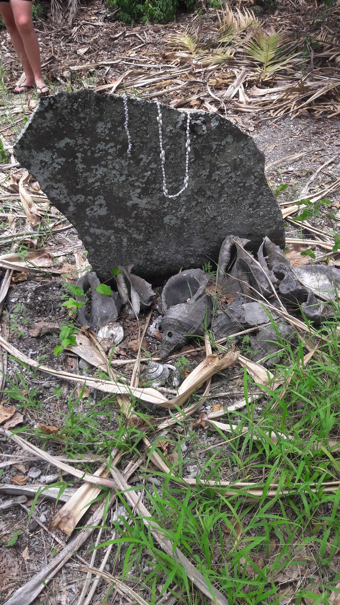

THE FEAST THAT NEVER ENDS
A chief never fights alone — he fields his buried retinue, willing and named, and every wound he takes is witnessed, and witnessed wounds carry a price Heaven enforces on the wounder.

THE FEAST THAT NEVER ENDS
A chief never fights alone — he fields his buried retinue, willing and named, and every wound he takes is witnessed, and witnessed wounds carry a price Heaven enforces on the wounder.
Feature map
Level-by-level features, as the figure refined them.
The Names Are Spoken
Bonus action · 1 CE.
Tier IV · Tank (the witnessed) · Suggested CE ability: STR · Primary verb: Witness. Technique DC = 8 + proficiency bonus + STR modifier. His hostile features key off Witnessed — see below. Witnessing is not an attack; it is the feast keeping books. Witness This (passive). When Roy Mata takes damage from a creature, Heaven notes it: the creature is Witnessed until the end of the encounter (no save — the wound is the witness). When he hits a Witnessed creature, it pays: his attacks deal additional force damage equal to his PB (the ledger settling). As a free action on its turn, a Witnessed creature may settle the account: take 2d8 psychic damage (Heaven collects) and the Witness clears. (The willing-decline is the oldest custom: acknowledge the wound, and the ache lifts.) The Fifty-Three (passive). He begins each encounter with standing retinue spirits equal to his PB (maximum 6). Each grants him +1 AC (the shield-wall of the dead) — the retinue's AC bonus can never exceed +6, however many stand. As a reaction when he would take damage, he may dismiss one standing member to reduce the damage by 2d8 before it is applied — Tavoa steps in. Dismissed members return at the next dawn. The retinue are willing: effects that turn or command undead do not affect them.
He speaks the names — Tavoa, Mala, Lemas, Sera, Nali, Pakoa, and the rest. Until the end of his next turn, his AC bonus from The Fifty-Three is doubled (maximum +8), and Witnessed creatures have disadvantage on saving throws against his technique features (the named dead, listening).
The Retinue Answers
Bonus action · 2 CE.
Up to two standing retinue members strike: each makes a melee attack (+PB + STR to hit) against a creature within 30 ft, dealing 1d8 + STR force damage on a hit. If the target is Witnessed, the spears collect: +PB force damage each.
Second Burial
Reaction · 3 CE.
When an ally within 30 ft of Roy Mata takes damage, a retinue member takes the burial: Roy Mata interposes — he takes the damage instead (roll 3d10; he takes that amount or the full damage, whichever is less; the rest, if any, strikes the ally as normal). Damage he takes this way is Witnessed.
The Island Is Tapu
Action · 4 CE · 1 minute (concentration) · 30-ft radius.
The ground becomes forbidden: hostile creatures inside have disadvantage on attack rolls against any creature other than Roy Mata — the tapu directs the violence to the chief, as is proper. A hostile creature may leave the radius freely — the willing-decline; the forbidden ground only binds those who remain.
The Mortuary Feast
Action · 6 CE.
The feast is spread: allies within 30 ft of him regain 3d8 + STR modifier HP. Every Witnessed creature within 30 ft immediately pays its account: takes 2d8 psychic damage as Heaven collects (no save — the debt was witnessed; the decline was the free-action settlement, offered every round and refused).
Maximum, Domain, or equivalent.
Capstone material.
Maximum: THE WHOLE ISLAND STOOD
All fifty-three stand: he regains all dismissed retinue members (up to 12 standing — the shield-wall, doubled; the AC bonus remains capped at +6, the extra members stand ready to be dismissed), and for the duration: - Damage he takes is halved (the formation absorbs — resistance, the fifty-three closing ranks). - Every creature that damages him becomes Witnessed (the whole island, watching). - The Retinue Answers costs no CE. (The two-phase burial, reversed: they rose with him once. They will rise as often as the feast requires.)
RETOKA — THE FEAST THAT NEVER ENDS
The forbidden island, at feast: firelight, singing, fifty-three figures standing in formation around the walled enclosure. Inside this domain, the sure-hit is the witnessing — at initiative 20, the retinue strikes as one: each hostile creature inside takes 2d8 force damage (the sure-hit lands — no save; the fifty-three do not miss), and each struck creature becomes Witnessed. (The sure-hit is not the wound. The sure-hit is the fifty-three pairs of eyes. The wound is just the receipt.) Sure-hit (allies): when the Domain opens, allies inside gain temporary HP equal to his STR modifier + PB and cannot be frightened while it stands — the feast steadies them.
- Clash points
- 800
- Burnout
- 5 rounds
- Duration
- 2 minutes
- Radius
- 60-ft radius
- Activation ✦
- full-turn action
- CE cost ✦
- 20
✦ Canon: figure Domains are Specific Domains — the stated profile governs, not the player point-unlock table.
THE THREE HUNDRED
The old ones' number: when Roy Mata chooses (no action), for 1 minute the retinue is uncountable — the three hundred of the oral tradition, standing: - His AC bonus from The Fifty-Three becomes +6, regardless of members dismissed. - The Retinue Answers strikes four times instead of two. - Witnessed creatures that damage him pay double (+2×PB force on his hits against them).
Build-defining options.
This technique grants Innate Technique Feats — hand-authored applications of the figure's art, available in the builder's feat picker when you select this technique.
Edge cases and shared systems.
Campaign canon notes